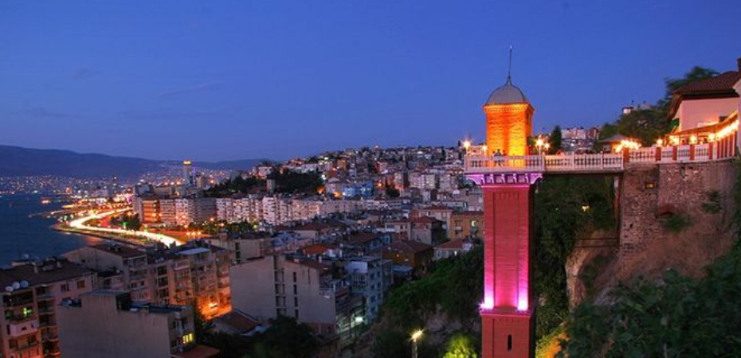
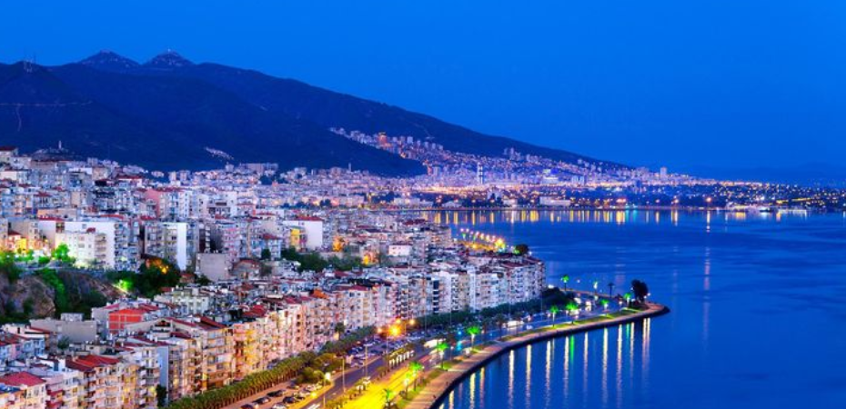
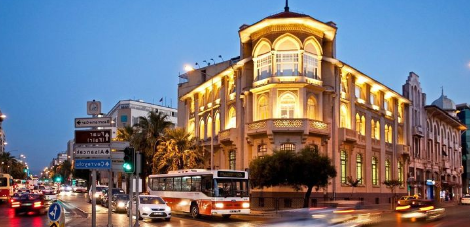
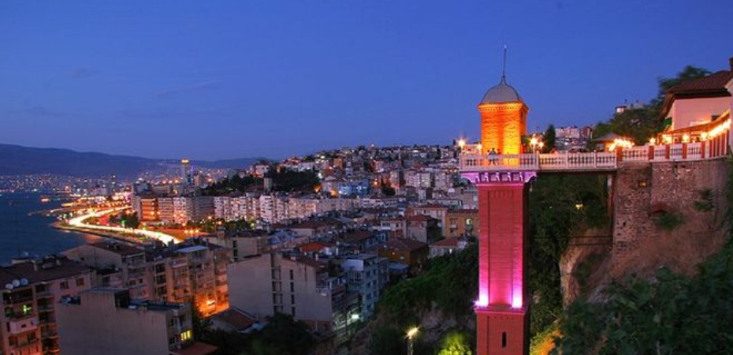
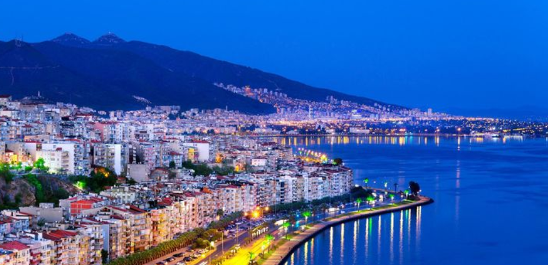
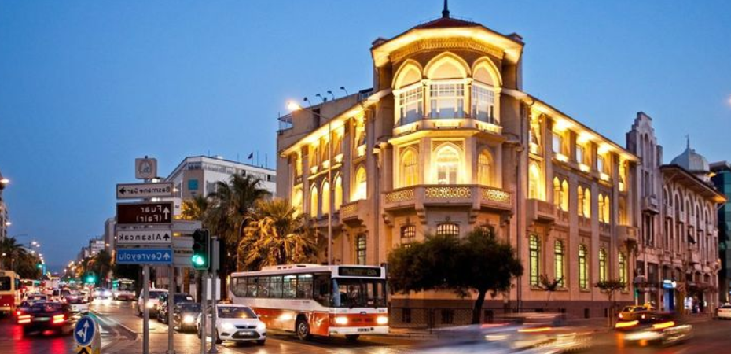

Ege Denizi’nin kıyısında, Anadolu Yarımadası’nın batısında konumlanan İzmir ülkemizin 3. büyük kenti olmasının yanı sıra sanayi üretimindeki ve istihdamdaki büyük payı ve sunduğu yaşam kalitesiyle yaşanabilir şehirlerin başında geliyor. 2018 sonu itibarıyla 4 milyonun üzerinde nüfusa sahip olan İzmir, genç çehresiyle sadece Ege’nin değil, ülkemizin de en üretken ve hayat dolu şehirlerinden biri. Akdeniz iklimine sahip olması nedeniyle yılın büyük kısmını güneşli geçiren İzmir’de yaz mevsimi sıcak, kışlar ise ılık geçiyor. 629 km’lik kıyı şeridinde onlarca mavi bayraklı plajı barındıran İzmir, mavinin her tonunu keşfedebileceğiniz berrak denizi ve her türlü su sporunu yapabileceğiniz popüler tatil beldeleriyle deniz, güneş, kum tatili dendiğinde akla gelen ilk şehirlerden.